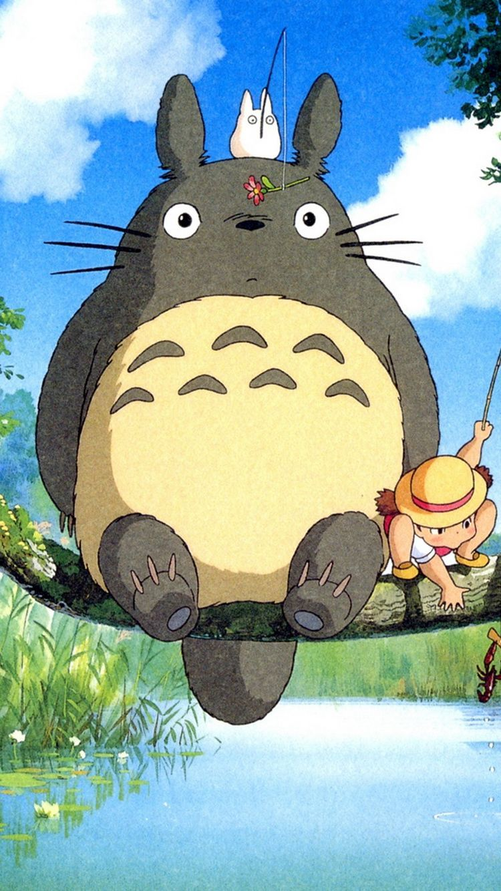

Las Mejores Películas de Studio Ghilbli (según yo)

Studio Ghibli
Studio Ghibli es un estudio de animación japonés que ha producido algunas de las películas de anime más icónicas y aclamadas a nivel mundial. Fue fundado en 1985 por los cineastas Hayao Miyazaki, Isao Takahata y el productor Toshio Suzuki.
La historia de Studio Ghibli se remonta a 1984, cuando Miyazaki y Takahata, quienes habían trabajado juntos en varias películas de animación, decidieron formar su propio estudio de animación. Fue entonces cuando conocieron a Suzuki, quien se unió como productor y cofundador del estudio.
El primer largometraje producido por Studio Ghibli fue "Nausicaä del Valle del Viento" en 1984, dirigida por Miyazaki y basada en un manga que él mismo había creado. El éxito de esta película llevó a la creación oficial de Studio Ghibli en 1985.
Desde entonces, Studio Ghibli ha producido una gran cantidad de películas de animación aclamadas mundialmente. Studio Ghibli se ha convertido en un ícono de la animación japonesa y es conocido por su enfoque en la narrativa emocional y la calidad visual de sus películas. En 2020, el estudio cerró su división de producción de películas, pero todavía se encarga de la gestión y promoción de su amplio catálogo de películas.